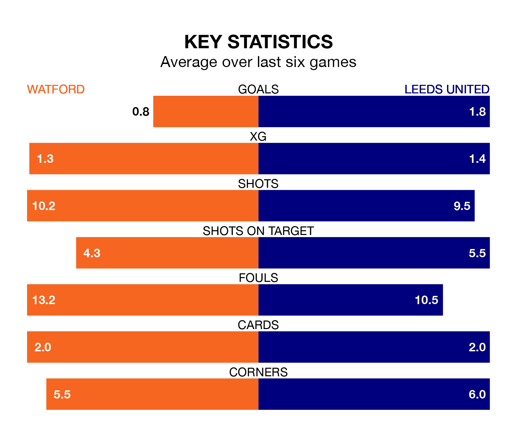

Leeds United are strong favourites to take all three points despite Watford's home advantage in Friday's late match at Vicarage Road.
*Betting Company* are offering odds of 1.7 on Leeds sealing the win, with the visitors sitting first in EFL Championship table.
Watford, who are 13th in the league and 34 points behind Leeds, are priced at 4.78 to win. A draw is set at 4.06.
With 70 goals in 38 games so far this season, Leeds are scoring more than average in the league with 1.8 goals per game. And they are conceding fewer than average, letting in 28 goals at a rate of 0.7 per game.
Watford, meanwhile, are average scorers, with 1.4 goals per game. They have conceded 1.3 goals per game.
With Illan Meslier between the sticks, United can rely on one of the league's safest pair of hands. He has kept 17 clean sheets in his 36 appearances this season, and no 'keeper has prevented the opposition scoring more often in EFL Championship.
In the Hornets's net, Daniel Bachmann has seven clean sheets in 19 games. He has conceded a goal every 78 minutes, 80% more often than the 139 minutes between goals for Meslier.
The home side are in mixed form in EFL Championship, with two wins and a draw from their last six games.
With five wins and a draw over that period, the visitors' form is much better – they have taken 16 points from 18, compared to Watford's seven.
In the last 10 years, Watford and Leeds have played each other on seven occasions. Watford won four of them and Leeds three.
On average, the Hornets scored 1.6 goals and Leeds 1.4 in those matches.
Their last meeting was on September 23, when Leeds won 3-0 at home.
Watford's last match was on March 16, a 1-0 win against Birmingham City, with Emmanuel Dennis getting the goal for the Hornets.
Leeds beat Millwall 2-0 last time out, on March 17, with Daniel James and Wilfried Gnonto on the scoresheet.
Updated: 10:19 (UTC), 22/03/24